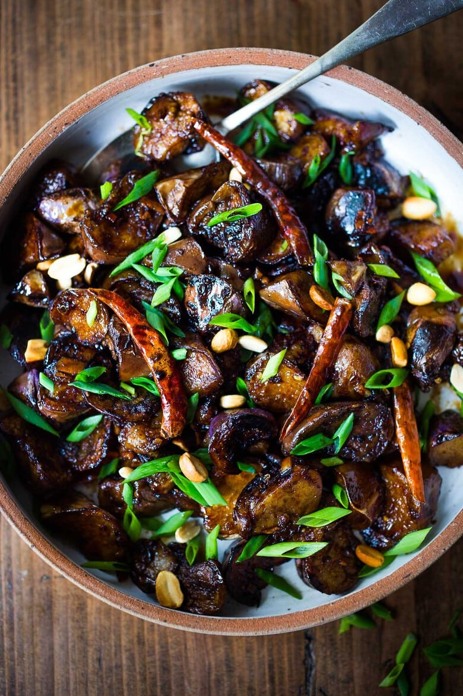

Chinese eggplant with spicy szechuan sauce
Ingredients
- 2 Asian long eggplants
- 3 pickled red pepper , or replace with fresh Thai red peppers, finely chopped
- 1 tbsp. broad bean paste , Doubanjiang
- 2 garlic cloves , chopped
- 1 tbsp. chopped ginger
- 2 green onions , white part and green part separately chopped
- coriander for decoration
- 2 tbsp. vegetable cooking oil
- 1 tsp. salt for soaking
- 1 tbsp. light soy sauce
- 1 tbsp. black vinegar
- 1 tbsp. cooking wine
- 2 tsp. cornstarch
- 1 tsp. sugar
- 1 tbsp. water
- Salt as needed
Preparation
- Roll cut washed eggplants into long strips (try to keep some skin on each one).
- Then soak the eggplant strips in salty water for around 15 minutes.Move out and drain.
- Prepare a bowl; mix all the ingredients for stir fry sauce. Then set aside.
- Heat up 2 tablespoons of oil in wok (comparing with other ingredients, eggplants need more oil) until you can see the waves.
- Add eggplants in and stir-fry until soft. Firstly the eggplants will absorb almost all the oils in the wok and then return some back after 2 or 3 minutes.
- Move the eggplants out or to one side of the wok; add garlic, chopped peppers, green onion white part and ginger to stir-fry for the aroma. Add doubanjiang to continue cooking for 1 minute for red oil. Then mix all the content in wok.
- Stir in the sauce. Mix well and make sure the eggplants are well coated.
- Move from wok, sprinkle chopped green onion and coriander leaves.